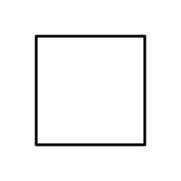

<!doctype html>
<html>

<head>
  <title>Verbal Complexity Experiment</title>
  <script src="https://unpkg.com/jspsych@8.0.2"></script>
  <script src="https://unpkg.com/@jspsych/plugin-html-keyboard-response@2.0.0"></script>
  <script src="https://unpkg.com/@jspsych/plugin-survey-text@2.0.0"></script>
  <link href="https://unpkg.com/jspsych@8.0.2/css/jspsych.css" rel="stylesheet" type="text/css" />
  <script src="https://unpkg.com/@jspsych/plugin-preload@2.0.0"></script>
  <script src="https://unpkg.com/@jspsych/plugin-fullscreen@1.2.1"></script>
  <!-- This is for data storage - please be sure to keep this script in all future updates to the code!! -->
  <script src="https://unpkg.com/@jspsych-contrib/plugin-pipe"></script>
</head>

<body></body>
<script>
  // initialize jsPsych
  var jsPsych = initJsPsych({
    show_progress_bar: true,
    on_error: function (error) {
      console.error("Error during experiment:", error); // log errors in console
    },
  });

  //PLEASE KEEP FOR ALL FUTURE ITERATIONS
  //create a unique filename by combining a random string and a millisecond counter (to avoid duplicates)
  var random_id = jsPsych.randomization.randomID(10);
  const date = new Date();
  random_id = "p"+random_id.toString();
  var file_id = random_id + "_" + date.getTime().toString();
  const filename = `${file_id}.csv`;
  //also store the random id for convenience
  jsPsych.data.addProperties({
        random_id: random_id,
      });
  //PLEASE KEEP FOR ALL FUTURE ITERATIONS
  

  // create timeline
  var timeline = [];

  // create a list of stimuli, each associated with an image file path and complexity level
  let all_stimuli = [];
  for (let i = 1; i < 161; i++) {
    all_stimuli.push({ complexity: i, path: "stimuli/" + i + ".jpg" });
  }

  // preload images
  var preload = {
    type: jsPsychPreload,
    images: all_stimuli.map((item) => item.path),
    on_error: function (error) {
      console.error("Error loading images:", error); // log image loading errors
    },
  };
  timeline.push(preload);

  // distribute the stimuli across complexity levels
  var easiest = [];
  var easy = [];
  var hard = [];
  var hardest = [];
  for (let i = 1; i <= 160; i++) {
    var level = Math.floor(i / 40);
    var label;
    switch (level) {
      case 0:
        easiest.push(all_stimuli[i]);
        break;
      case 1:
        easy.push(all_stimuli[i]);
        break;
      case 2:
        hard.push(all_stimuli[i]);
        break;
      case 3:
        hardest.push(all_stimuli[i]);
        break;
    }
  }
  var all_levels = [easiest, easy, hard, hardest];

  // select a subset of images, evenly distributed across complexity levels
  var trial_stimuli_ordered = [];
  var trials_per_level = 5;
  for (let level = 0; level < all_levels.length; level++) {
    var sample_indices = jsPsych.randomization.sampleWithoutReplacement(
      all_levels[level].map((_, index) => index),
      trials_per_level,
    );
    var current_level_selection = sample_indices.map(
      (index) => all_levels[level][index],
    );
    trial_stimuli_ordered = trial_stimuli_ordered.concat(
      current_level_selection,
    );
  }

  // randomly order the stimuli to avoid any order effects
  var trial_stimuli = jsPsych.randomization.repeat(trial_stimuli_ordered, 1);

  // fullscreen
  var fullscreen_Mode = {
    type: jsPsychFullscreen,
    fullscreen_mode: true,
  };
  timeline.push(fullscreen_Mode);

  // welcome, introduction message
  var welcome = {
    type: jsPsychHtmlKeyboardResponse,
    stimulus: '<p style="width:900px;">Welcome to the experiment. Your task is simple: Just describe what you see on the screen. On each trial, you will see an unfamiliar shape; your goal should be to describe the shape so that a person could draw something similar based on your description. Your description can be any number of words you feel are necessary to accurately describe the shape. Press any key to begin.</p>',
  };
  timeline.push(welcome);

  // add the participant ID element
  var participant_id_entry = {
    type: jsPsychSurveyText,
    questions: [{ prompt: "Please enter your participant ID (e.g. p1):", name: "participant_id" }],
    on_finish: function (data) {
      jsPsych.data.addProperties({
        participant: data.response.participant_id,
      });
    },
  };
  timeline.push(participant_id_entry);

  // basic trial
  var trial = {
    type: jsPsychSurveyText,
    preamble: "<p>We will begin with a practice trial. Please describe what you see on the screen.<\p>",
    questions: [
      {
        prompt: '',
        rows: 5,
        columns: 50,
        name: "image_description",
        required: true
      }
    ],
    post_trial_gap: 500,
  }

  timeline.push(trial);

  // loop to create trials
  for (let i = 0; i < trial_stimuli.length; i++) {
    // store path of stimuli
    var path = trial_stimuli[i].path;

    // trial created and data is stored
    var test = {
      type: jsPsychSurveyText,
      preamble: "<p>Describe what you see on the screen.<\p>",
      questions: [
        {
          prompt: "',
          rows: 5,
          columns: 50,
          name: "image_description",
          required: true,
        },
      ],
      post_trial_gap: 500,

      on_finish: function (data) {
        data.condition = "study";
        data.complexity = trial_stimuli[i].complexity;
        data.image_path = trial_stimuli[i].path;
        data.text_response = data.response["image_description"];

        split_response = data.text_response.split(" ");
        length_response = split_response.length;
        data.word_count = length_response
      }
    }
    timeline.push(test);
  }

  // participant survey feedback   
  var feedback_survey = {
    type: jsPsychSurveyText,
    preamble: "<p>Now we will conduct a small survey to receive some feedback on the experiment. Please answer the following questions.<\p>",
    questions: [
      {prompt: "What do you think this experiment was about?"},
      {prompt: "Did you encounter any technical issues during the experiment?"},
      {prompt: "Were the instructions clear and easy to understand?"},
      {prompt: "Are there any ways we can improve this experiment for the future?"}
    ]
  }
  timeline.push(feedback_survey);
  
  // final debrief message
  var debrief = {
    type: jsPsychHtmlKeyboardResponse,
    stimulus: '<p style="width:900px;">Congratulations! You have completed the visual complexity experiment. You received visual stimuli of varying complexity and was asked to describe them. We are collecting data to show the relationship between complex objects and events in the real world and their representations in the mind. We want to know if there is an inverted U-shaped relationship between the two, meaning the length of the descriptions of the stimuli would increase as their complexity increases, hit a plateau point of maximum of description length where they would then begin the decrease as the stimuli gets increasingly complex still. Thanks for participating!</p>',
  };
  timeline.push(debrief);

  // exit fullscreen
  var exit_fullscreen = {
    type: jsPsychFullscreen,
    fullscreen_mode: false,
  };
  timeline.push(exit_fullscreen);

  //PLEASE KEEP FOR ALL FUTURE ITERATIONS
  //this portion of the code ensures that the data gets sent to be stored on OSF
  const save_data = {
    type: jsPsychPipe,
    action: "save",
    experiment_id: "OtGoWE1hxiob",
    filename: filename,
    data_string: () => jsPsych.data.get().csv()
  };
  timeline.push(save_data);
  //PLEASE KEEP FOR ALL FUTURE ITERATIONS

  // start the experiment
  jsPsych.run(timeline);
</script>

</html>
